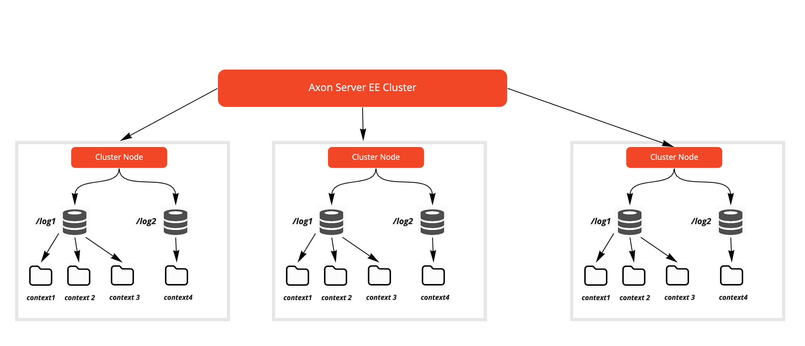
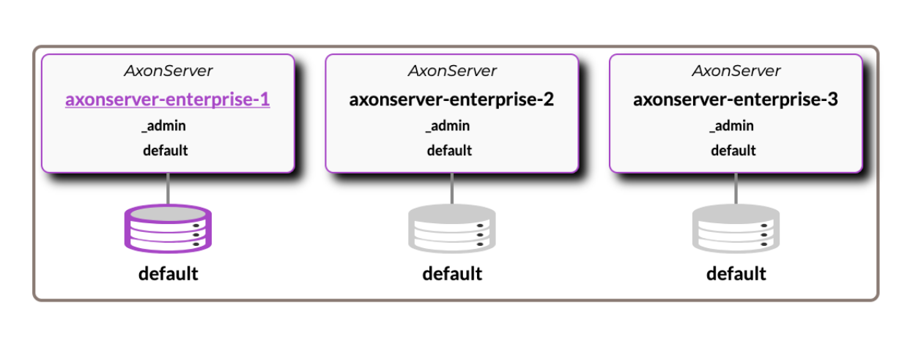
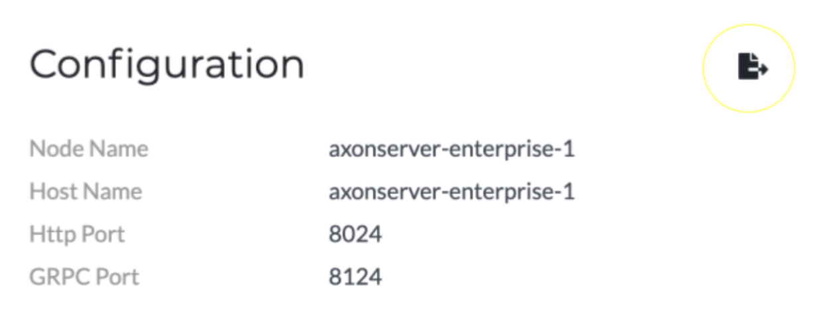

Clusters
| This feature is part not supported in the Developer plan |
Introduction
Axon Server can be deployed as a cluster to guarantee high availability. A cluster of Axon Server nodes will provide multiple connection points for (Axon Framework-based) client applications, and thus share the load of managing message delivery and event storage. Client applications will dynamically connect to a node in the cluster and automatically reconnect to another, should the node that they are currently connected to become unreachable.
An Axon Server EE cluster has 3 main areas of administration,
-
Cluster Nodes - "Instances" of Axon Server that need to be part of the cluster.
-
Replication Groups - Responsible for event data replication and transaction management between the various nodes of a cluster.
-
Contexts - Responsible for event storage within the various nodes of a cluster.
A visual representation of the relationship between the 3 is shown below.

Setup process
The cluster setup process always begins by designating any one clean/uninitialized Axon Server EE node as the first member of the cluster. You can then run the "init-cluster" command on it which will create the following replication groups and contexts -> admin/default.
From thereon, there are multiple ways to continue the setup depending upon your Event Store deployment topology.
-
Any other Axon Server node can be added to the cluster using the "register-node" command without associating it with any Replication Group / Context.
-
New Replication Groups/Contexts can be added and cluster member nodes can be associated with these.
-
Member nodes can be removed from the cluster at any point of time.
Axon provides two ways for automating cluster configuration. The first is the Automatic Initialization feature and the other is the Cluster Template feature.
Automatic initialization
The manual process of member registration of the cluster can be bypassed by setting a couple of properties in the axonserver.properties file.
axoniq.axonserver.autocluster.first=internal-hostname:internal-port axoniq.axonserver.autocluster.contexts=context1,context2
The axoniq.axonserver.autocluster.first property defines the first node in the cluster, by specifying its internal hostname (the hostname used by other Axon Server nodes to connect to this host), and the internal port. If the internal port is default (8224) it can be omitted.
axoniq.axonserver.autocluster.contexts defines the contexts to create on the first node and the context to join for the other nodes. All of these contexts will be joined as primary nodes. When you don’t specify any contexts, the initial node will only create an admin context, the other nodes will join the cluster, but not be a member of any contexts.
The autocluster properties will only take effect on a clean start of a node. If a node is already initialized, it will not create any contexts anymore, nor join the cluster again.
Cluster templates
The cluster template is defined as a YAML file, describing a cluster’s configuration. It is possible to predefine replication groups, contexts, metadata, applications (with tokens), and users (with their roles), so that the configuration can be shared across teams.
| The cluster template runs exactly once, on the first clean Axon Server start-up, if there is no previous cluster configuration defined. Therefore, the cluster template will not override any existing configuration. Its purpose is to be used during active development, to be able to share the configuration across development teams. |
Usage
To use the cluster template feature, all you need to do is define a valid cluster template YAML file. If this file is present on a fresh Axon Server startup, it will automatically be picked up and the cluster will be configured accordingly.
| Each cluster node needs to have the cluster template YAML file copy. Each node will read this file, find its own configuration and configure itself. |
Default path from which Axon Server reads configuration is ./cluster-template.yml
You can override this path anytime by setting Axon Server property: axoniq.axonserver.clustertemplate.path:/mypath/cluster-template.yml
Configuration
Below you can find an example of a basic cluster setup: the _admin and default contexts are in separate replication nodes, replicated across all nodes that are marked as primary.
axoniq:
axonserver:
cluster-template:
first: internal-hostname:internal-port
replicationGroups:
- name: _admin
roles:
- node: axonserver-1
role: PRIMARY
- node: axonserver-2
role: PRIMARY
- node: axonserver-3
role: PRIMARY
contexts:
- name: _admin
- name: default
roles:
- node: axonserver-2
role: PRIMARY
- node: axonserver-3
role: PRIMARY
- node: axonserver-1
role: PRIMARY
contexts:
- name: default
applications: []
users: []
Cluster overview after default configuration is applied
Export
In order to avoid mistakes while writing a cluster configuration file, we have implemented an export button that will generate a cluster template file based on current setup.

Location of export button at Settings page
Recommended mechanism - Creating an advanced cluster setup
-
Start a fresh Axon Server setup (use basic cluster template setup mentioned above).
-
Configure a cluster via the UI, by creating users, applications, replication groups and contexts.
-
Use the export button located at "Settings -> Configuration" panel to download the current cluster configuration.
-
Replace the basic cluster template with the newly exported cluster template configuration.
Use export button from any admin node to ensure that the configuration file contains all the relevant information.